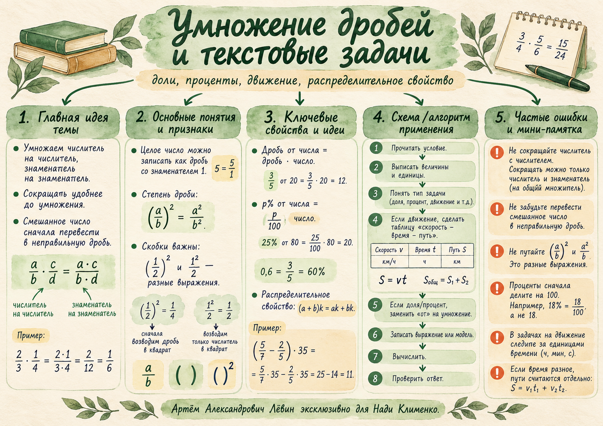

В квадрате вся дробь
(12)2 = 14
Квадрат дроби: ("+F("a","b")+")2 = "+F("a2","b2")+".
Математика / 6 класс / Занятие 20.10.26
Сокращать до умножения, переводить условие в модель, находить доли и проценты, использовать распределительное свойство.
Удобное вычисление начинается с понимания того, какие величины связаны между собой.
20 октября 2026 · Путь А: 10 задач · Лёвин Артём Александрович, эксклюзивно для Нади Клименко
01 / Арифметика
Для умножения достаточно перемножить соответствующие числители и знаменатели. Если сокращение видно заранее, воспользуйтесь им до вычислений.
Числитель и знаменатель произведения вычисляются раздельно.
Перемножить можно и три дроби; сокращение допустимо между любыми числителями и знаменателями общего произведения.
Для целого числа используется знаменатель 1. Смешанное число сначала переводится в неправильную дробь.
Типичная ошибка: сокращать числитель с другим числителем. При сокращении уменьшают числитель и знаменатель на общий множитель.
02 / Запись
При возведении всей дроби в квадрат степень относится и к числителю, и к знаменателю. Скобки показывают область действия степени.
Квадрат дроби: ("+F("a","b")+")2 = "+F("a2","b2")+".
В этих записях получаются разные результаты. Скобки нельзя пропускать.
Порядок действий: скобки → степени → умножение и деление → сложение и вычитание.
03 / Моделирование
Прочитайте условие, выпишите известные величины с единицами, установите связь, запишите математическое выражение. Только затем считайте.
Если каждый кубический сантиметр имеет массу q граммов, то масса при объёме V см³ равна произведению.
Для q = 11 г/см³ и V = 3 см³: m = 11 · 3 = 33 г.
Величины важно различать: рост массы вместе с объёмом сам по себе ещё не обосновывает произвольное умножение. Умножаем именно массу единицы объёма на число таких единиц.
04 / Движение
Путь каждого участника вычисляем из его скорости и времени. Начальное расстояние при встрече равно сумме путей.
Поезда одновременно выехали навстречу и встретились через 3,35 ч. Скорость первого — 75 км/ч, скорость второго — 910 скорости первого.
| Поезд | Скорость, км/ч | Время, ч | Путь, км |
|---|---|---|---|
| Первый | 75 | 3,35 | 75 · 3,35 |
| Второй | 910 · 75 = 67,5 | 3,35 | 67,5 · 3,35 |
Доли полосы пропорциональны путям поездов из задачи. Кнопки показывают, как условие превращается в результат.
Исходные данные: 75 км/ч, 9/10 этой скорости, общее время 3,35 ч.
Первый друг шёл 1,4 ч со скоростью 5,34 км/ч, второй — 1,15 ч со скоростью 6,1 км/ч.
При разных временах путь каждого нужно вычислять отдельно.
05 / Доли
Часть величины можно обозначить обыкновенной дробью, десятичной дробью или процентами. Перед умножением проценты переводятся в дробь делением на 100.
В бочке 130 л воды. Каждая из трёх форм доли означает один и тот же расход: 78 л.
0,6 · 130 = 78 л
Число литров остаётся тем же: меняется только запись доли.
06 / Свойства
Число за скобкой умножается на каждый её член. При подходящих знаменателях это помогает вычислить выражение, не приводя дроби к общему знаменателю.
Оба знаменателя делят внешний множитель 35.
Внешний множитель 36 делится на 9 и на 36.
При раскрытии скобок умножаем каждый член и сохраняем знак между членами.
07 / Путь А
Задания расположены от вычислений с дробями до математических моделей. Ответ откройте после собственного решения.
Вычислите, предварительно сократив дроби: 29 · 278.
34.
Вычислите произведение трёх дробей: 310 · 259 · 65.
1.
Найдите значения и сравните: (23)2 и 223.
49 и 43. Второе выражение больше.
Переведите смешанное число в неправильную дробь и вычислите: 2 13 · 914.
1 12.
Вычислите, используя распределительное свойство: (47 + 314) · 42.
33.
Найдите 512 от 96 л.
40 л.
Найдите 35% от 240 кг.
84 кг.
Объём детали 2,5 см³. Масса 1 см³ материала — 11,2 г. Найдите массу детали.
28 г.
Двое друзей двигались навстречу и встретились. Первый шёл 1,5 ч со скоростью 4,8 км/ч, второй — 1,2 ч со скоростью 5,5 км/ч. Найдите начальное расстояние.
13,8 км.
Повышенная сложность. Два поезда одновременно выехали навстречу и встретились через 2,4 ч. Скорость первого 68 км/ч, второго — 34 скорости первого. Найдите расстояние между городами.
285,6 км.
08 / Самопроверка
Отмечайте навыки только после того, как сможете восстановить правило и привести объяснение. Локальная отметка не изменяет диагностический уровень в кабинете.
0 из 7 навыков
